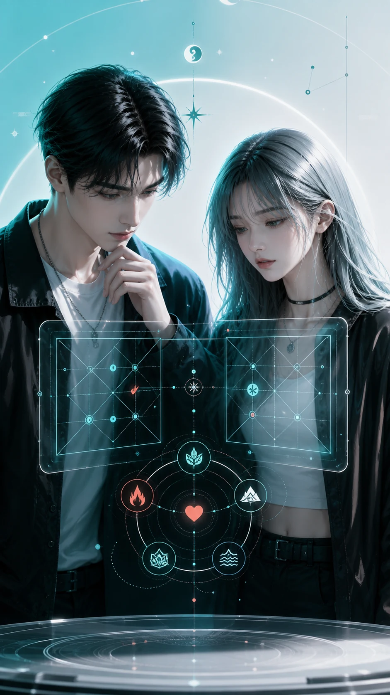
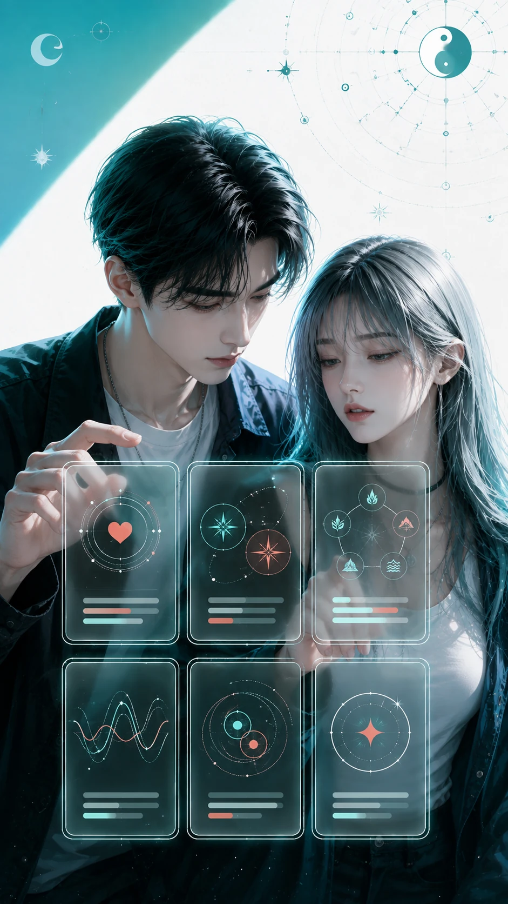

명리궁합 · 오행 · 일지로 보는 관계 신호
우리 둘, 진짜 잘 맞아?
좋아하는 마음만으로는 설명 안 되는 답장 온도, 충돌 버튼, 오래 가는 체력을 관계 흐름으로 먼저 살펴봅니다.
관계 총평
띠/지지 궁합
오행 케미
소통 궁합
전체 리포트
19,900원
고민 공감
좋은데, 왜 자꾸 신경 쓰이지?
말투 하나, 답장 간격 하나에도 마음이 출렁일 때가 있습니다. 이 서비스는 감정과 확인할 사실을 나눠서 봅니다.
- 먼저 연락하면 부담스러워 보일까 고민되는 순간
- 표현 속도는 다른데 마음까지 다른 건지 헷갈리는 순간
- 분위기는 좋은데 같은 포인트에서 반복해서 삐끗하는 순간
반복 상황
잘 맞는데 같은 데서 삐끗한다면
끌림과 갈등은 따로 움직일 수 있습니다. 둘의 지지 관계, 오행의 주고받는 힘, 말투 온도를 함께 보며 반복 루프를 짚습니다.

이 서비스가 보는 기준
케미를 한쪽 감정으로만 보지 않습니다
띠와 지지는 가까워지는 방식, 오행은 에너지를 주고받는 방향, 일지는 편안함과 부딪힘이 나오는 생활 감각으로 풀어냅니다.
띠/지지 궁합
찰떡, 무난, 거리 필요한 조합과 충돌 버튼을 구분합니다.
오행 케미
상생 텐션과 상극 텐션, 부족한 에너지 보완 포인트를 봅니다.
소통 리듬
말투 온도, 연락 속도, 싸울 때의 방어 패턴을 현실 언어로 바꿉니다.

이런 것까지 봅니다
관계 총평
케미 한 줄, 그린라이트, 옐로포인트, 확인할 질문
띠/지지 궁합
찰떡 조합, 무난한 조합, 거리 필요한 조합, 충돌 버튼
오행 케미
상생 텐션, 상극 텐션, 에너지 충전과 소모 포인트
소통 궁합
말투 온도, 답장 리듬, 서운함 처리법, 화해 문장
갈등 리포트
반복 갈등 루프, 신뢰 흔들림, 선 넘는 순간
오늘의 관계 액션
오늘 연락 톤, 한 박자 늦추기, 나를 지키는 경계 문장
처음엔 여섯 개만 선명하게
처음 버전은 관계를 바로 이해하고 행동으로 옮기기 쉬운 항목부터 엽니다.
무료 티저에서 입력 단계로
결론 대신, 지금 확인할 질문부터
먼저 두 사람의 기본 신호를 입력하고, 결제 후 전체 리포트와 항목별 상세 풀이를 엽니다. 헤어짐이나 결혼 같은 선택은 단정하지 않습니다.